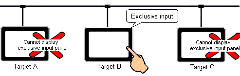

|
|
|
|
|
|
|
|
Data sharing is a useful feature that enables one target machine to view and change data on another target machine, or access the same PLC from two different physical locations. But this could also produce uncertain situations where two different operators might begin working with the same equipment without being aware of each other's actions.
To prevent simultaneous inputs to the same variable, you can set up exclusive input relationships between target to target and target to Web Gate client. With this feature you can stop other target machines from changing the value of variables you're working on.
At run time, when you try to change to a panel set up with exclusive input, the target requests permission from the target set up as the Input Manager. This target either grants the request (if none of the other targets is in exclusive input mode) or refuses the request (if one of the other targets is in exclusive input mode).
If the request is granted, you can begin working with the exclusive input panel. If the request is refused, the target remains on the same panel and displays a message.
At run time, when a target displays an exclusive input panel, and the amount of time defined in the Inactivity Timeout property elapses without any user input operations (touch panel or touch function key), then the Input Manager forces the target to display its initial panel. If the target was displaying the exclusive input panel in a popup window, then that popup window will close.
After creating two or more targets, in the Project properties enable Input Synchronization.
In the Input Manager property, select the target that will control exclusive input rights.
To limit the amount of time a panel can remain in exclusive input, select the Inactivity Timeout checkbox and specify the time in minutes.
The target that you select as the Input Manager must be set up with data sharing. In the Input Manager target properties, set Data Sharing = Enabled.

If you change the Input Manager, or if you change the IP address of the Input Manager target, you must download again to all the targets in the project.
After setting up Input Sychronization in the Project properties, in the Panel properties the Exclusive Input property becomes available.
This property defines which panels are part of the exclusive input pool. Only one panel out of this pool can display at any time. In other words, at run time if an exclusive input panel is displayed, other targets in the project cannot display an exclusive input panel, which could include popup window panels.

Other targets can display panels that are not part of the exclusive input pool.
If you want to set Exclusive Input to all the panels except for the initial panel, in the Target properties enable Exclusive Input. This property enables Exclusive Input for all panels, including popup window panels.

Do not use the Target's Exclusive Input property if your application uses the popup window for a menu that navigates panels. Instead, apply Exclusive Input to panels individually.

If a change panel operation to display exclusive input panels occurs on two or more target machines within a very short time of each other (approximately 1 second), each target will display the exclusive input panel for a fraction of a second. However, only one of the panels is granted exclusive input and continues displaying the panel. Exclusive input is denied on the other targets at which time they revert to the initial panel, instead of returning to the previous panel.
You cannot set up the initial panel with exclusive input. The initial panel is the default panel that displays when exclusive input fails. Every other panel in a target can be set up with exclusive input.
The difference between the Input Manager target machine and other target machines is only noticeable when communication between targets machines fails (see Section 22.2.3, Exclusive Input and Communication at Run Time); otherwise, all the target machines in an exclusive input relationship behave identically.